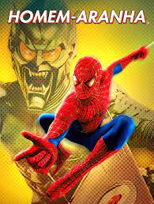

Homem Aranha 2
Veja um resumo:
O Dr. Otto Octavius é transformado em Doutor Octopus quando uma falha em uma experiência de fusão nuclear resulta em uma explosão que mata sua esposa.

O Homem-Aranha, o alter ego de Peter Parker, é um super-herói das revistas em quadrinhos publicadas pela Marvel Comics. Criado pelo escritor/editor Stan Lee e pelo escritor/artista Steve Ditko, o Homem-Aranha surgiu em Amazing Fantasy, durante a Era de Prata dos Quadrinhos.
O Dr. Otto Octavius é transformado em Doutor Octopus quando uma falha em uma experiência de fusão nuclear resulta em uma explosão que mata sua esposa.

Peter Parker está em uma viagem de duas semanas pela Europa, ao lado de seus amigos de colégio, quando é surpreendido pela visita de Nick Fury

Após ser atingido por uma teia radioativa, Miles Morales, um jovem negro do Brooklyn, se torna o Homem-Aranha.